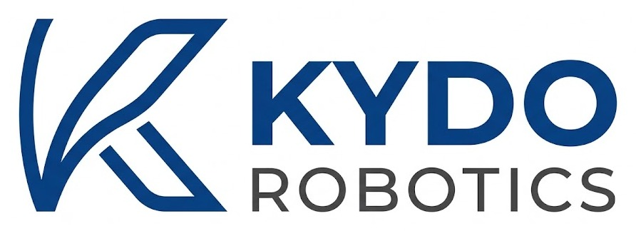
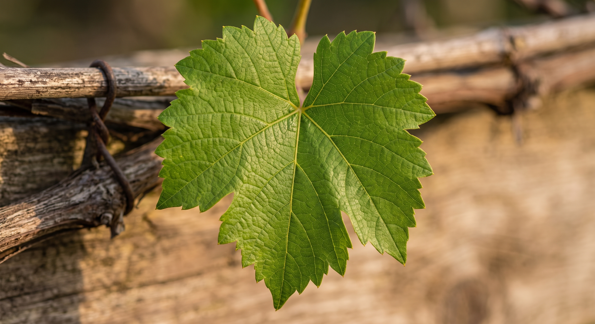

Ci lavoriamo adesso
Rilievo di prossimità
La parete di foglie e grappoli vista da vicino, pianta per pianta, con luce propria e una centralina meteo a bordo. Ogni rilievo porta data e posizione, così alla visita successiva si ritrova la stessa vite.

Prima campagna in vigna, primavera 2027
Safe Power, Smart Farming.
Kydo Robotics sviluppa sistemi terrestri per il rilievo di prossimità in vigneti e frutteti, e introduce in Europa tecnologie di propulsione ibrida e full-electric progettate attorno alla sicurezza dell'operatore. Le nostre macchine percorrono l'interfilare e restituiscono la parete vegetativa pianta per pianta, con dati georeferenziati e confrontabili stagione dopo stagione: il livello di dettaglio che l'osservazione dall'alto non raggiunge.
Scrivici Cantine, frutticoltori e operatori di servizi con drone.
Ci lavoriamo adesso
La parete di foglie e grappoli vista da vicino, pianta per pianta, con luce propria e una centralina meteo a bordo. Ogni rilievo porta data e posizione, così alla visita successiva si ritrova la stessa vite.
Il passo successivo, dopo la prima stagione in vigna
Ibrido e full-electric a basso voltaggio, dove la sicurezza di chi conduce la macchina viene prima della prestazione. Il full-electric è la destinazione, l'ibrido è il passo che oggi la rende praticabile senza sacrificare la giornata di lavoro.
In parallelo: stiamo scegliendo i partner
Sviluppo e forniture insieme a partner tecnologici selezionati, soprattutto nei poli manifatturieri asiatici. Assemblaggio finale, collaudo e responsabilità del costruttore restano in Europa.
Le decisioni agronomiche che contano si prendono su una pianta alla volta. Il rover lavora a quella scala.

Grappoli e sintomi stanno sulla parete verticale, sotto le foglie apicali. Il rover li riprende da vicino e a distanza costante mentre percorre l'interfilare, nella posizione in cui compaiono.
L'illuminazione propria rende sovrapponibili le acquisizioni nelle ore di bassa luce, all'alba, al tramonto e di notte. Due passaggi a settimane di distanza restano leggibili uno accanto all'altro.
Temperatura, umidità, pioggia e bagnatura fogliare registrate lungo tutto il percorso. Un profilo del vigneto invece del valore puntuale di una stazione fissa, ed è quello che i modelli previsionali chiedono in ingresso.
Ogni acquisizione esce datata e georeferenziata, così alla visita successiva si torna sulla stessa pianta. È l'anagrafe del vigneto, che si costruisce stagione dopo stagione.
Il rover è l'ultimo passaggio, non il primo. Prima si guarda la vigna dall'alto e si leggono i dati meteo, poi si scende sulla pianta. I tre livelli finiscono in un solo bollettino periodico, che dice che cosa conviene fare adesso.
Un satellite pubblico passa sulla vigna ogni pochi giorni e misura quanto verde c'è. La serie storica parte dal 2017: ogni annata si confronta con le precedenti e con la campagna intorno, così si capisce se un calo riguarda solo la tua vigna o tutta la zona, e dove conviene andare a guardare.
Temperatura, umidità, pioggia e bagnatura fogliare alimentano i modelli previsionali, che indicano quando le condizioni favoriscono peronospora e oidio. È il dato che permette di muoversi prima che la malattia si veda.
Le riprese ravvicinate, oggi a piedi e dalla primavera 2027 con il rover, arrivano al singolo ceppo. È la scala a cui compaiono i sintomi sulla foglia, come la tigratura del mal dell'esca, ed è il livello che permette di tornare sulla stessa vite alla visita successiva.
In sviluppo, domanda di brevetto depositata
L'oidio impone ogni stagione una lunga serie di trattamenti, anche nei vigneti biologici. Stiamo sviluppando un modulo UV-C da montare sul rover che, di notte, espone foglie e grappoli a brevi dosi di luce ultravioletta mentre percorre il filare.
Le prove in vigneto condotte dalla ricerca internazionale mostrano che, applicata al buio, questa luce contiene l'oidio senza effetti sulla crescita della vite né sulla resa, e senza lasciare nulla sull'uva. È una strada concreta per usare meno fitofarmaci, con un trattamento che si fa nelle stesse ore di buio in cui il rover è pensato per lavorare.
Complementare al rilievo aereo, non alternativo.
Il volo risolve la scala dell'appezzamento. Il rover chiude il buco che il volo lascia.